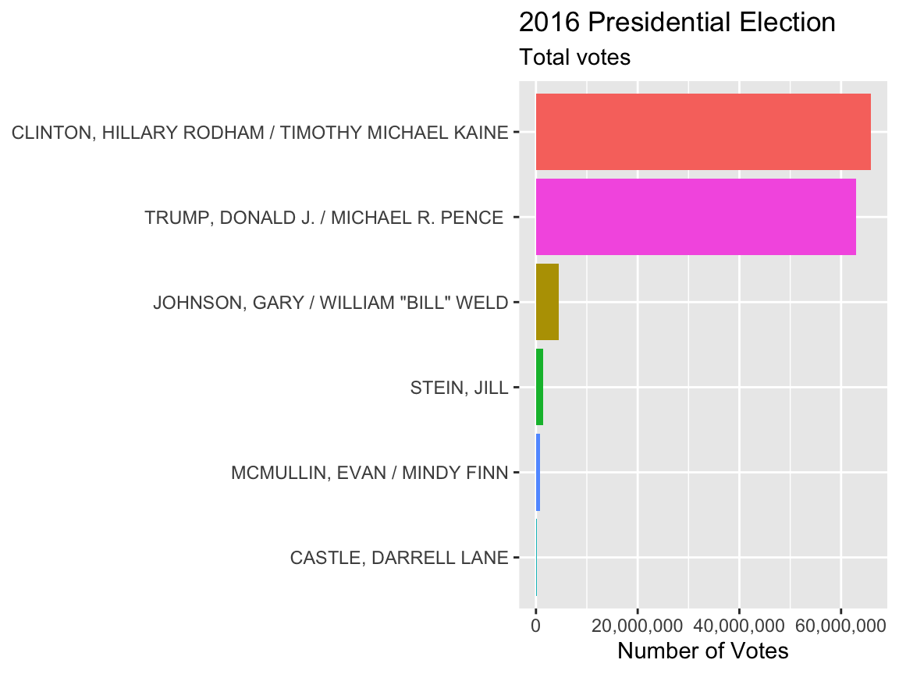
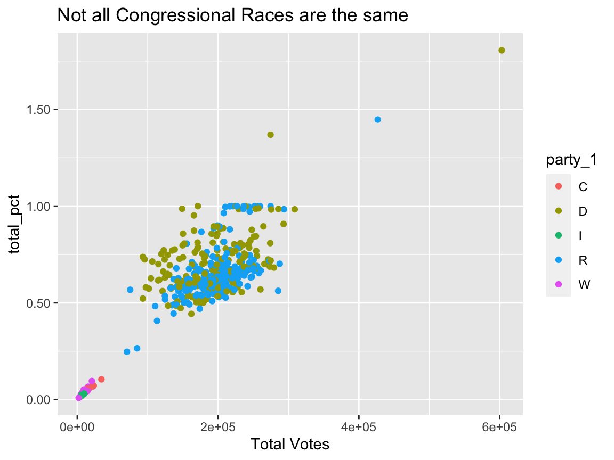

vignettes/fec_vignette.Rmd
fec_vignette.RmdThe fec16 package provides tamed relational datasets of the Federal Election Commission (FEC)’s 2015-2016 election cycle. Some datasets are included in full, while a sample of the others is available with the option of retrieving the entire datasets through the functions built in the package. Details are given below.
We wanted to create a data package that is easy to use for people just beginning to learn R, for example, in introductory statistics and data science classes. For this purpose, this package is nice because students and instructors do not need to worry about the unnecessary data wrangling and can immediately use the data for analysis.
Our package is inspired by Hadley Wickham’s nycflights13 package. We used the data taming principles from Albert Kim’s fivethirtyeight package, which are explained in detail here.
We used the tame data principles to produce uniform data frames that are easy to navigate and link together. The following are the guidelines we used to tame our data:
clean_names()
as.Date, unless it is only a year then it would be numeric typeas.factor otherwise it would be of character typeNA
Anyone interested in US politics and elections who wants to use actual data to think critically and make inferences. We made this package particularly with students and instructors in mind as there is demand for relational data in teaching. fec16 is a one-stop shop for acquiring data of this kind.
candidates: candidates registered with the FEC during the 2015-2016 election cyclecommittees: committees registered with the FEC during the 2015-2016 election cyclecampaigns: the house/senate current campaignsresults_house: the house results of the 2016 general presidential electionresults_senate: the senate results of the 2016 general presidential electionresults_president: the final results of the 2016 general presidential electionpac: Political Action Committee (PAC) and party summary financial informationindividuals: individual contributions to candidates/committees during the 2016 general presidential electioncontributions: candidates and their contributions from committees during the 2016 general electionexpenditures: the operating expenditurestransactions: transactions between committeesThe following functions retrieve the entire datasets for the sampled ones listed above. The size of the raw file that is downloaded by calling each function is given for reference. All functions have an argument n_max which defaults to the entire dataset but the user can specify the max length of the dataset to be loaded via this argument.
read_all_individuals() ~ 1.45GBread_all_contributions() ~ 15.4MBread_all_expenditures() ~ 52.1MBread_all_transactions() ~ 79.2MBfor example:
# The entire expenditures dataset can be accessed by: all_expenditures <- fec16::read_all_expenditures() # The first 30 entries in this dataset can be accessed by: expenditures_30 <- fec16::read_all_expenditures(n_max = 30)
More details can be found on the documentation pages which can be called via: ?function_name
The first six rows of the results_house dataset look like:
head(results_house) #> # A tibble: 6 x 13 #> state district_id cand_id incumbent party primary_votes primary_percent #> <chr> <chr> <chr> <lgl> <chr> <dbl> <dbl> #> 1 AL 01 H4AL01… TRUE R 71310 0.601 #> 2 AL 01 H6AL01… FALSE R 47319 0.399 #> 3 AL 02 H0AL02… TRUE R 78689 0.664 #> 4 AL 02 H6AL02… FALSE R 33015 0.278 #> 5 AL 02 H6AL02… FALSE R 6856 0.0578 #> 6 AL 02 H6AL02… FALSE D NA NA #> # … with 6 more variables: runoff_votes <dbl>, runoff_percent <dbl>, #> # general_votes <dbl>, general_percent <dbl>, won <lgl>, footnotes <chr>
We can use this package to address the (non-exhaustive) list of questions:
To answer our questions we can make use of some data wrangling and data visualization techniques. Some examples (addressing the questions above) are shown below:
Which presidential candidate won a majority in more states, and how many votes did they get?
Using the results_president dataset, we can also see what actually happened in the 2016 elections.
Here is how we can summarize the number of wins by candidate:
wins <- left_join(results_president, candidates) %>% group_by(cand_id, cand_name) %>% summarise( total_votes = sum(general_votes, na.rm = TRUE), states_won = sum(won) ) %>% arrange(desc(total_votes)) head(wins) #> # A tibble: 6 x 4 #> # Groups: cand_id [6] #> cand_id cand_name total_votes states_won #> <chr> <chr> <dbl> <int> #> 1 P00003392 "CLINTON, HILLARY RODHAM / TIMOTHY MICHAEL K… 65853514 21 #> 2 P80001571 "TRUMP, DONALD J. / MICHAEL R. PENCE " 62984828 30 #> 3 P20002671 "JOHNSON, GARY / WILLIAM \"BILL\" WELD" 4489341 0 #> 4 P20003984 "STEIN, JILL" 1457218 0 #> 5 P60022654 "MCMULLIN, EVAN / MINDY FINN" 731991 0 #> 6 P60021102 "CASTLE, DARRELL LANE" 203090 0
Compare these results to those reported by the Wikipedia. We can show the results using a simple bar chart:
Each win is for a single state. There are 51 total wins for the 50 States and Washington, D.C.
ggplot( wins %>% head(6), aes(x = reorder(cand_name, total_votes), y = total_votes, fill = cand_id) ) + geom_col() + scale_fill_discrete(guide = FALSE) + scale_y_continuous(labels = comma) + labs( title = "2016 Presidential Election", subtitle = "Total votes", x = NULL, y = "Number of Votes" ) + coord_flip()

We can see that Hillary Clinton earned the most votes.
What is the relationship between contributions of candidates in the house and total votes they get?
Here we investigate what kind of relationship, if any, the candidates with over a 1000 votes got with the total contributions they made. We are interested in candidates with an ID number so we can join them with the contribution data set by using inner_join.
all_contributions <- fec16::read_all_contributions() results_by_cand <- left_join(results_house, candidates, by = "cand_id") %>% left_join(all_contributions, by = "cand_id") %>% group_by(cand_id, cand_name, cand_pty_affiliation) %>% summarise( sum_votes = sum(general_votes), contribution = sum(transaction_amt) ) %>% filter(sum_votes > 1000) head(results_by_cand) #> # A tibble: 6 x 5 #> # Groups: cand_id, cand_name [6] #> cand_id cand_name cand_pty_affiliation sum_votes contribution #> <chr> <chr> <chr> <dbl> <dbl> #> 1 H0AL02087 ROBY, MARTHA REP 63801078 1105157 #> 2 H0AL05163 BROOKS, MO REP 30641403 251855 #> 3 H0AL07086 SEWELL, TERRYCINA ANDREA DEM 169016210 1249038 #> 4 H0AR01083 CRAWFORD, ERIC ALAN RICK REP 45047170 385616 #> 5 H0AR03055 WOMACK, STEVE REP 73193704 568116 #> 6 H0AZ01259 GOSAR, PAUL DR. REP 78139008 680874
Next, we plot the contributions and votes on a scatter plot and plot a trend line that would make it easy for us to see the relationship. Since there are outliers in the data, it is best to not use a continuous axis scale in order to see all of the points.
ggplot(results_by_cand, aes(x = contribution, y = sum_votes)) + geom_point() + scale_x_log10(labels = comma) + scale_y_sqrt(labels = comma) + geom_smooth(method = "auto") + labs( title = "Contributions vs. Votes in 2016", x = "Contributions in US Dollars", y = "Total Votes" )
As we can see, the highest contributors got the highest amount of votes so it has a positive correlation, but then it falls after a large contribution amount.
What is the distribution of number of votes across winners in the US House of Representatives?
Visualize the results of the popular vote in the elections and see how many people voted:
house_winners <- left_join(results_house, candidates, by = "cand_id") %>% mutate(party_1 = str_sub(party, 1, 1)) %>% filter(won, state %in% state.abb) %>% group_by(cand_id, cand_name, party_1) %>% summarize( total_votes = sum(general_votes), total_pct = sum(general_percent), ) ggplot( house_winners, aes( x = total_votes, y = total_pct, color = party_1 ) ) + geom_point() + labs( title = "Not all Congressional Races are the same", fill = "Candidate", x = "Total Votes", "Total Percent" ) + scale_y_continuous(labels = comma)
